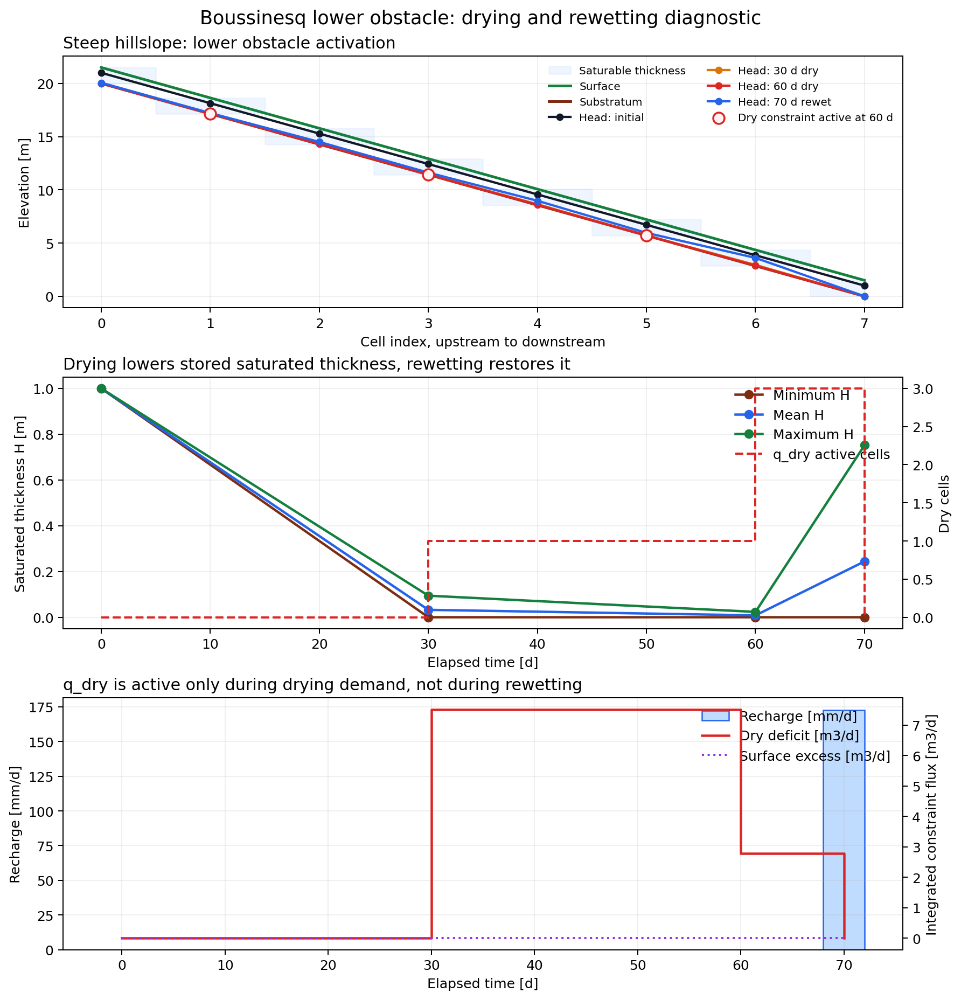
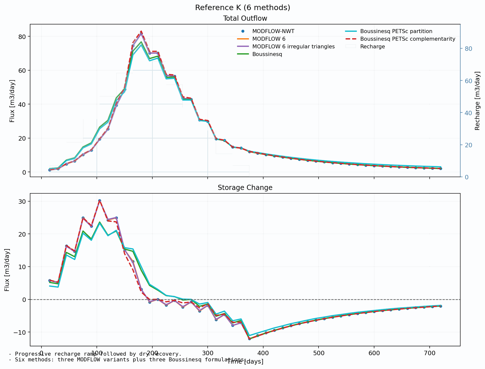

Boussinesq Theory#
This page consolidates the scientific notes for the in-house flow/boussinesq
solver family. It covers the equation, the finite-volume method, surface
interaction and lower-obstacle drying, the runtime engines, formulation
comparison, and a possibility map.
The Boussinesq route is not a MODFLOW wrapper. It is a HydroModPy-native finite-volume shallow-groundwater formulation on triangular runtime meshes.
The shallow-groundwater equation solved here descends from the seminal works of [Boussinesq, 1877] and [Boussinesq, 1904], which build on the Dupuit assumptions [Dupuit, 1863]. A modern textbook treatment can be found in [Brutsaert, 2005]. See Bibliography for the full list of cited references.
Current Scope#
Topic |
Current interpretation |
|---|---|
Process pair |
|
Mesh support |
Triangular runtime meshes. |
Regimes |
Steady and transient paths exist. |
Main outputs |
Hydraulic head and groundwater/surface-interaction terms. |
Maturity |
Active validation path; use comparison and validation pages before making production claims. |
Result Anchors For The Equations#
Before reading the residual terms, it helps to keep two committed validation figures in mind. They are not decorative examples; they show what the mathematical terms below are meant to explain.

{kind=link}

Fig. 82 The lower-obstacle diagnostic is a visual companion for the bounded saturated-thickness interpretation and the drying/rewetting behaviour discussed later in this page.#
Equation And Unknowns#
Primary Unknown#
The primary solved variable is the cell-centered hydraulic head:
for each triangular aquifer cell \(i\).
From \(h_i\), the backend reconstructs the saturated thickness:
and the transmissivity:
The clipping is important. The nonlinear solver may test intermediate head states, but the physical residual always interprets them through an admissible saturated thickness.
Cell Balance#
The Boussinesq backend solves a cellwise mass balance. In words, each residual balances:
lateral exchange between neighboring triangular cells;
imposed-head exchanges on side, stream, or ocean supports;
recharge;
wells;
top drainage or surface-excess terms;
storage in transient mode.
With HydroModPy’s residual sign convention, positive residual contributions tend to remove water from the cell. Recharge and injection therefore enter with a negative sign.
Steady Equation#
The steady problem searches for:
for every active cell \(i\).
The head-only regularized formulation uses the residual shape:
where \(s_i(h)\) is the selected surface-interaction contribution.
Transient Equation#
Transient runs add a backward-Euler storage term based on a lower-bounded saturated thickness:
The transient storage contribution is therefore:
so the transient residual is:
with the same exchange, forcing, and surface terms evaluated at the new time level.
This matters during drying. A head update below the substratum must not create a negative saturated thickness or a negative storage volume. The head remains the primary unknown. Transmissivity uses the capped admissible thickness, while storage is only lower-bounded so head-only transient formulations do not lose their time-step memory when they temporarily carry heads above the top surface.
What This Equation Does Not Claim#
The Boussinesq backend is not a full 3D groundwater model and not a full overland-flow model. It is a shallow-groundwater reduction where the water table, transmissivity, and surface-interaction behavior are represented inside one cell-centered finite-volume balance.
Geometric Setting And Cell Quantities#
The solver works on a 2D triangular mesh of aquifer cells. Each cell \(i\) has:
area \(A_i\),
top elevation \(z^{\text{top}}_i\),
bottom elevation \(z^{\text{bot}}_i\),
hydraulic conductivity \(K_i\),
storage coefficient \(S_i\).
Cell Balance And Sign Convention#
The solver is built around a residual balance written per cell. The convention used by the code is:
positive residual contributions tend to remove water from the cell,
recharge and positive well injection add water and therefore appear with a minus sign in the residual,
a converged solution satisfies \(R_i \approx 0\) for every cell \(i\).
This convention is the one implemented in assemble_steady_residual() and
assemble_transient_residual().
Internal Edge Fluxes#
Consider an internal edge \(e\) shared by cells \(a\) and \(b\). The code defines one oriented flux \(q^{\text{int}}_e\) that is positive when water leaves cell \(a\) and enters cell \(b\):
The edge transmissive factor is
where:
\(K^{H}_e\) is the harmonic mean of \(K_a\) and \(K_b\),
\(\bar{b}_e = \frac{1}{2}(b_a + b_b)\) is the averaged saturated thickness,
\(L_e\) is the edge length,
\(d_e\) is the centroid-to-centroid distance between the two cells.
The residual contribution of internal fluxes is conservative:
This part is implemented by:
internal_edge_flux_from_head(),accumulate_internal_flux_residual().
Imposed-Head Exchanges#
Some edges carry an imposed stage \(H_e\), for example:
side Dirichlet conditions,
stream supports,
ocean supports.
For such edges, the code builds cell-to-edge transmissive coefficients
and similarly for \(\tau_{b,e}\) when a second owner cell exists.
The corresponding exchange fluxes are
Those fluxes are accumulated directly into the owner-cell residuals. In the current mesh usage, imposed-head support is mainly used on boundary edges, but the implementation is slightly more general and can also account for an edge with two owner cells.
Recharge, Wells, Drainage And Surface Interaction#
Recharge#
Recharge is represented as a surface rate \(r_i\) in m/s. In the
current first slice of the backend, recharge is homogeneous in space for a
given stress period. Its volumetric contribution in cell \(i\) is
Wells#
Wells are converted to cell-based volumetric rates
\(Q^{\text{well}}_i\) in m^3/s. The sign convention is:
positive value: injection into the aquifer,
negative value: pumping from the aquifer.
Since injection adds water, the residual contains \(-Q^{\text{well}}_i\).
Drainage#
Drainage is a simple top leakage law that activates only when the head exceeds the cell top elevation:
This term is always treated as an outflow from the aquifer and therefore enters the residual with a positive sign.
Regularized Saturation Excess Closure#
The current backend includes a regularized saturation-excess source term. Its goal is pragmatic: avoid a sharp on/off overflow law exactly at full saturation while still allowing near-surface water release when the cell is almost full.
Define the saturation ratio
Let \(R^{\text{lat}}_i\) be the lateral balance rate converted back to a surface flux by division through \(A_i\). The code forms
and then applies the regularization
where \(\varepsilon > 0\) is the regularization radius.
This term is not meant to be a final physically complete overland-flow model. It is a smooth release mechanism used by the head-only formulation close to full saturation.
Mixed Complementarity Surface Closure#
The PETSc mixed formulation uses a different surface interaction model. It introduces one explicit cellwise surface-excess unknown \(q_i^{\text{ex}} \ge 0\) and replaces the regularized law by the complementarity condition
which reads:
if \(h_i < z_i^{\text{top}}\), then \(q_i^{\text{ex}} = 0\),
if \(q_i^{\text{ex}} > 0\), then \(h_i = z_i^{\text{top}}\).
The implementation enforces this relation with a Fischer-Burmeister residual
on scaled variables in runtimes/petsc_mixed.py. In that formulation the surface
flux is not prescribed by a local partition law; it is solved together with
the head field so that the finite-volume balance and the unilateral surface
constraint are satisfied simultaneously.
Surface Interaction And Interception#
This section separates the groundwater/surface-interaction choices from the rest of the Boussinesq equation.
The important modelling point is that Boussinesq does not simply compute head. It also needs a rule for what happens when the groundwater state approaches or intercepts the topographic surface.
Surface Terms#
The current documentation distinguishes three related mechanisms:
Mechanism |
Role |
Current status |
|---|---|---|
Recharge |
Adds water as a surface rate projected to cells. |
Supported as homogeneous or resolved cellwise forcing depending on the workflow input. |
Drainage |
Removes water when head exceeds the cell top elevation. |
Simple top leakage law. |
Saturation excess |
Represents near-surface release when the aquifer reaches the surface constraint. |
Implemented through two alternative closures. |
Regularized Partition Closure#
The regularized_partition closure keeps hydraulic head as the only
unknown. The surface-excess term is reconstructed by a smooth law that becomes
active near full saturation.
This route is useful because it is:
available with
local,scipy,scipy_sparse, andpetsc;smooth enough for dense and sparse Newton-style solves;
the main cross-platform comparison baseline.
Its limit is scientific rather than technical: it is a pragmatic release law, not a full coupled surface-flow model. It can keep a low-amplitude seepage set active where a stricter threshold model would turn surface excess off.
Mixed Complementarity Closure#
The complementarity closure introduces explicit saturation excess:
and enforces:
This reads:
if the head is below the topographic surface, surface excess is zero;
if surface excess is positive, the head is on the surface threshold.
The implementation uses a Fischer-Burmeister residual in the PETSc mixed runtime. This route is the most explicit way to represent surface interception as an on/off threshold constraint.
Lower Drying Obstacle (Surface View)#
The same PETSc mixed route also enforces the lower head obstacle:
through a dry-deficit unknown \(q_i^{dry}\). This quantity is not a physical leakage through the substratum. It is a numerical unmet-demand term: when the cell is already dry, it prevents the balance from removing more water than the saturated storage can provide.
The head-only regularized_partition route does not solve this explicit
lower complementarity constraint. It still uses bounded saturated thickness in
transmissivity, lower-bounded saturated thickness in transient storage, and it
reports diagnostics if the head itself drops below the lower obstacle.
Selection Rule#
Question |
Prefer |
Prefer |
|---|---|---|
Need cross-platform execution? |
Yes. |
No, PETSc/Linux route. |
Need a smooth head-only residual? |
Yes. |
No. |
Need explicit on/off surface-threshold behavior? |
Not primarily. |
Yes. |
Comparing against existing head-only validation cases? |
Usually yes. |
Only if the comparison is about the closure itself. |
Lower Obstacle Drying#
This section documents how the Boussinesq backend treats the physically required lower bound on hydraulic head:
The implementation still solves for hydraulic head. It does not switch the primary unknown to water volume or saturated stock. The lower obstacle is handled by using non-negative saturated thickness in the physical operators, and by adding an explicit complementarity term in the PETSc mixed runtime.
Bounded Saturated Thickness#
For every cell \(i\), the raw saturated thickness would be:
The solver does not use this raw value directly in transmissivity. It reconstructs the transmissive saturated thickness:
The transmissivity is:
The transient storage uses a lower-bounded drainable volume:
The backward-Euler storage contribution is:
This avoids negative transmissivity and negative storage even if a nonlinear iteration temporarily evaluates a head below the substratum. The upper surface is deliberately not used to cap transient storage in the head-only routes: if those routes allow a pressure-like head above \(z^{top}\), the time-step history must still contain enough storage memory to avoid artificially frozen transients.
Regularized Partition Route#
The regularized_partition route is head-only. It uses the capped thickness
above in transmissivity and lower-bounded storage in the transient term, but it
does not solve an explicit lower complementarity constraint.
In practice:
transmissivity remains non-negative;
storage remains non-negative and keeps transient memory above the top surface when this head-only route permits such heads;
diagnostics report whether the accepted head field went below \(z^{bot}\);
no algebraic
dry deficitunknown is solved in this route.
Use this route when the goal is a smooth head-only baseline or cross-platform execution. Use the PETSc complementarity route when the lower obstacle itself must be enforced by the nonlinear solve.
PETSc Double Obstacle Route#
With runtime_backend = "petsc" and
surface_interaction_model = "complementarity", the mixed unknown layout is:
The upper surface complementarity is:
The lower drying complementarity is:
The two algebraic rates have different interpretations:
\(q_i^{ex}\) is a saturation-excess release term at the upper surface;
\(q_i^{dry}\) is not a substratum leakage term. It is an unmet-demand correction that prevents the residual from removing more water than the available saturated storage.
With the HydroModPy residual sign convention, positive residual terms remove water. The dry-deficit contribution therefore enters the balance with the opposite sign:
This sign is essential. If a cell is already at \(h_i=z_i^{bot}\), the dry-deficit term offsets any remaining removal demand instead of adding water through a physical boundary.
Diagnostics And Exports#
Boussinesq runtime summaries now include lower-obstacle diagnostics:
Key family |
Meaning |
|---|---|
|
Reports accepted-head violations below \(z^{bot}\) and the associated potential negative storage volume. |
|
Reports active dry-deficit cells, peak rates and integrated dry-deficit volume. |
|
Exported state-history array for the cellwise \(q^{dry}\) rate. |
|
Comparison-budget component reconstructed from
|
|
Comparison export containing per-snapshot |
These diagnostics should be read separately from physical discharge terms. They tell where the lower obstacle is active and how much extraction or drainage demand could not be satisfied by saturated storage.
In budget closure diagnostics, dry_deficit_total_m3_s is treated with the
same sign as available water because it offsets an otherwise unsatisfied
removal demand. It is still not a physical recharge boundary.
Validation Case: Steep Hillslope Drying And Rewetting#
The committed PETSc validation test is:
tests/validation/numerical/transient/test_boussinesq_drying_petsc.py
It contains two checks:
a single-cell pumping case that forces immediate lower-obstacle activation;
a steep sloping hillslope that dries by natural lateral drainage under zero recharge, then rewets when recharge resumes.
The hillslope case uses:
Item |
Value |
|---|---|
Cells |
8 cell-centered finite-volume cells. |
Substratum |
Linear drop from 20 m upstream to 0 m downstream. |
Saturable thickness |
1.5 m. |
Hydraulic conductivity |
1e-3 m/s. |
Storage coefficient |
0.2. |
Downstream boundary |
Prescribed head equal to downstream substratum elevation. |
Drying phase |
Two 30-day periods with zero recharge. |
Rewetting phase |
One 10-day period with recharge 2e-6 m/s. |
Expected behavior:
during zero recharge, lateral drainage lowers the water table naturally;
several cells reach \(h=z^{bot}\) and activate \(q^{dry}\);
the accepted head field remains above the lower obstacle within tolerance;
after recharge resumes, head rises and \(q^{dry}\) deactivates.
Fig. 83 The diagnostic figure shows the same validation setup as a visual sequence: the initial water table drains toward the sloping substratum, the lower complementarity constraint activates during the dry phase, and recharge reactivates storage without leaving a persistent dry-deficit term.#
Run the validation from Windows through the WSL development environment:
wsl.exe bash -lc "bash install/enter_wsl_dev.sh --headless -- python -m pytest tests/validation/numerical/transient/test_boussinesq_drying_petsc.py -q"
Regenerate the documentation asset from the same WSL environment:
wsl.exe bash -lc "cd /mnt/c/codes/HydroModPy && bash install/enter_wsl_dev.sh --headless -- python -m tools.doc_gallery.generate_boussinesq_drying_assets"
Or from an already activated Linux shell:
python -m pytest tests/validation/numerical/transient/test_boussinesq_drying_petsc.py -q
python -m tools.doc_gallery.generate_boussinesq_drying_assets
Design Interpretation#
This is a pragmatic intermediate formulation:
the solved differential unknown remains hydraulic head;
transmissive operators use capped saturated thickness;
transient storage uses lower-bounded saturated thickness;
the PETSc mixed runtime adds a lower algebraic obstacle only where needed;
dry deficit is exposed as a diagnostic, not as a physical flux.
A future stock-based formulation could make stored water the primary unknown. That would be a larger modelling change. The current design keeps the existing head-based method while removing negative saturated thickness, negative storage, and unconstrained dry heads in the PETSc complementarity route.
Boussinesq Method#
This section describes the method layer between the equation and the nonlinear solver engine.
In the code, this layer is explicit: formulations/ defines algebraic
unknowns and surface closures, discretization/ defines space/time schemes,
and methods/ combines them into named method families.
Spatial Method#
The current space scheme is:
finite-volume triangular cell-centered method
The solver works on a compact triangular mesh view. Internal edge fluxes use:
owner cell pairs;
edge length;
centroid-to-centroid distance;
harmonic conductivity;
averaged saturated thickness.
The method is conservative on internal edges: the flux leaving one cell enters the neighboring cell with the opposite sign.
Time Methods#
Two regimes are documented and implemented:
Regime |
Scheme |
Interpretation |
|---|---|---|
Steady |
|
Solve one nonlinear balance with no storage term. |
Transient |
|
Fully implicit time stepping with storage evaluated between accepted snapshots. |
Current Method Families#
Method id |
Unknown layout |
Surface closure |
|---|---|---|
|
|
|
|
|
|
The method id is the physically meaningful combination. A runtime backend such
as scipy_sparse or petsc only says how that method is solved.
Head-Only Regularized Partition#
This is the historical comparison baseline. The unknown vector only contains hydraulic head. Surface excess is reconstructed from the head and the lateral balance through a smooth regularized partition law.
Use it when:
the run must stay cross-platform;
the goal is comparison with existing validation cases;
the mesh is small enough for dense engines or large enough for
scipy_sparse;a smooth head-only residual is preferred over an explicit complementarity constraint.
Mixed Complementarity#
This method adds two cellwise algebraic unknowns:
for saturation excess at the surface, and:
for the lower drying obstacle. The PETSc runtime solves head, surface excess and dry deficit together as a double-obstacle complementarity problem.
Use it when:
PETSc is available;
the question is specifically about on/off surface-threshold behavior;
dry-down and repeated activation/deactivation of the surface threshold are important diagnostics.
lower-obstacle drying must be enforced explicitly.
Head-Only Steady Residual#
The steady residual assembled by the code is
The steady solve therefore searches for
Head-Only Transient Residual#
For one fully implicit backward-Euler time step from \(t^n\) to \(t^{n+1}\), the additional storage term is
The transient residual is then
The backend solves
This is the transient residual solved by the local, scipy,
scipy_sparse and PETSc regularized-partition runtimes.
Solver Engines#
This section distinguishes the physical method from the execution engine.
The user-facing runtime backend names are:
local
scipy
scipy_sparse
petsc
They are not separate hydrological models. They are numerical engines used to solve one resolved Boussinesq method.
Engine Matrix#
Runtime backend |
Linear layout |
Supported method |
Best use |
|---|---|---|---|
|
Dense |
|
Small validation meshes and transparent debugging. |
|
Dense |
|
Dense SciPy reference route around the same residual. |
|
Sparse |
|
Cross-platform reference for larger triangular meshes. |
|
Sparse |
|
Linux/PETSc route for sparse SNES solves, surface complementarity and lower-obstacle drying tests. |
Surface Model Resolution#
The process-to-runtime selection resolves two axes:
runtime_backend + surface_interaction_model -> method + engine
The surface-interaction token can be:
auto
regularized_partition
complementarity
With auto:
petscresolves tocomplementarity;non-PETSc backends resolve to
regularized_partition.
If complementarity is requested with a non-PETSc runtime, the code rejects
the combination because that method is currently implemented only for
runtime_backend = "petsc".
Minimal Configuration Shape#
The exact surrounding TOML depends on the workflow, but the relevant flow choice is conceptually:
[[simulation.process]]
id = "flow_main"
type = "flow"
solvers = ["boussinesq"]
[flow]
flow_regime = "transient"
runtime_backend = "scipy_sparse"
surface_interaction_model = "regularized_partition"
For a PETSc complementarity experiment:
[[simulation.process]]
id = "flow_main"
type = "flow"
solvers = ["boussinesq"]
[flow]
flow_regime = "transient"
runtime_backend = "petsc"
surface_interaction_model = "complementarity"
Interpretation Rule#
When comparing outputs, record both axes:
the method: formulation, surface closure, space scheme, and time scheme;
the engine: nonlinear solver, matrix layout, Jacobian strategy, and linear solver.
Two runs can share the same method but differ by engine. Two PETSc runs can share the same engine name but differ by method if their surface closure is different.
Nonlinear Solution Strategy#
Local Runtime#
The local runtime uses a dense damped Newton loop:
start from an initial head guess,
assemble the residual,
build a dense Jacobian by forward finite differences,
solve the linearized Newton system,
backtrack the Newton update until the residual decreases,
stop when the infinity norm of the residual is below tolerance.
This strategy is transparent and easy to debug, which is why it is useful in small validation slices, but it is not the preferred path for larger meshes.
SciPy Runtime#
The SciPy runtime keeps the same residual and the same finite-difference
Jacobian, but delegates the nonlinear solve to scipy.optimize.root. The
important point is that the physics does not change; only the nonlinear driver
changes.
SciPy Sparse Runtime#
The SciPy sparse runtime still solves the head-only regularized-partition residual, but it changes the linear algebra and Jacobian assembly strategy:
smooth residual terms are differentiated analytically,
the remaining nonlinear saturation terms are completed by sparse finite-difference corrections,
the Newton step is solved with SciPy sparse matrices and
spsolve.
This is the current non-PETSc reference path for larger Boussinesq meshes on all platforms.
PETSc Regularized-Partition Runtime#
The Linux-only PETSc regularized-partition backend keeps the same head-only residual as above,
but solves it with PETSc SNES on a sparse Jacobian assembled from the same semi-analytic ingredients as the SciPy sparse runtime. This path is the PETSc counterpart of the historical head-only overflow regularization.
PETSc Mixed Complementarity Runtime#
The Linux-only PETSc backend introduces one algebraic saturation-excess unknown \(q^{\text{ex}}_i\) per cell and solves a mixed semi-explicit DAE at each backward-Euler step:
with the same finite-volume flow balance as above, except that the regularized overflow term is replaced by the explicit unknown \(q^{\text{ex}}_i\), and one nonlinear complementarity relation:
The implementation encodes this complementarity through a Fischer-Burmeister residual on scaled variables and lets PETSc SNES solve the full mixed nonlinear system.
In transient mode the current implementation uses a hybrid warm start for \(q^{\text{ex}}\):
under explicit positive loading (for example recharge or injection), the initial guess is taken from the historical regularized-partition predictor,
during dry-down periods without positive loading, the initial guess is the dry state \(q^{\text{ex}} = 0\).
That choice is numerical rather than physical. It improves robustness when overflow turns off after a wet period without changing the converged zero set of the mixed complementarity system.
On the committed headwater_100km2_outlet_2 real-basin cycling case, this
mixed closure also captures repeated activation/deactivation windows of the
surface threshold, whereas the regularized-partition closures keep one
low-amplitude seepage set active through the whole sequence under the same
forcing. That difference is one practical reason to keep both surface
interaction models explicit in the documentation. Complementarity diagnostics
in the runtime summary are evaluated on accepted solver snapshots, excluding
the raw transient initial condition.
The same pattern remains visible on the stronger heterogeneous cycling variant where \(K\) and \(S_y\) are mapped from generated concentric hydrofacies over the committed basin mesh. In that case the regularized partition path still keeps one persistent seepage window active, while the mixed complementarity path converges with repeated on/off threshold windows and returns to a dry terminal state.
Possibility Map#
This section makes the current possibilities explicit.
It is intentionally a map, not a promise that every combination is equally mature. Use the capability gallery and validation pages before treating a combination as production-ready.
Main Possibilities#
Goal |
Recommended combination |
Surface closure |
Runtime |
|---|---|---|---|
Small analytical validation |
Head-only finite-volume Boussinesq. |
|
|
Larger cross-platform triangular mesh |
Head-only sparse Boussinesq. |
|
|
PETSc sparse baseline |
Head-only PETSc partition route. |
|
|
Surface-threshold activation study |
Mixed head-plus-saturation-excess-plus-dry-deficit route. |
|
|
Drying and rewetting study |
PETSc mixed double-obstacle route. |
|
|
MODFLOW/Boussinesq simulation comparison |
Start from shared geometry and forcing, then document closure and mesh differences explicitly. |
Depends on comparison question. |
Usually |
Possibility Axes#
The Boussinesq route should be described along these axes:
Axis |
Values |
Why it matters |
|---|---|---|
Flow regime |
|
Adds or removes storage and time-step history. |
Mesh |
Triangular runtime mesh. |
Controls internal-edge fluxes and cellwise top/bottom support. |
Hydraulic properties |
Scalar or mapped |
Changes transmissivity and transient response. |
Surface closure |
|
Changes how surface interception, saturation excess and lower-obstacle drying are represented. |
Runtime engine |
|
Changes nonlinear solve strategy and scalability. |
What To Report In A Comparison#
Always report:
mesh source and resolution;
top and bottom surfaces;
hydraulic conductivity and storage mapping;
recharge and well forcing;
boundary supports;
flow regime and time stepping;
surface-interaction closure;
runtime backend.
Without these fields, it is too easy to attribute differences to
boussinesq as a solver name when the actual difference comes from the
surface closure, mesh, property transfer, or runtime-specific convergence
path.
Formulation Comparison#
This section is the Boussinesq-local entry point for comparing alternative
flow/boussinesq formulations.
The comparison outputs should still be produced by the standard comparison workflow. What changes here is the reading location: Boussinesq formulation comparisons belong close to the Boussinesq equations, methods, and surface closures, not only in the transversal capability gallery.
What Is Being Compared#
The current in-house Boussinesq backend has two distinct modelling axes:
Axis |
Choices |
Interpretation |
|---|---|---|
Surface closure |
|
Changes how near-surface release and saturation excess are represented. |
Unknown layout |
|
Changes whether saturation excess is reconstructed from head or solved together with the lower drying obstacle as explicit cellwise unknowns. |
Runtime backend |
|
Changes nonlinear and linear algebra execution. This is not by itself a different hydrological formulation. |
Flow regime |
|
Adds or removes storage and time-step history. |
Support |
Shared triangular mesh, different mesh, or structured MODFLOW support |
Controls whether differences can be interpreted as formulation effects or as mixed formulation/support effects. |
The cleanest formulation comparison keeps the runtime backend and support fixed as much as possible. For example, comparing:
petsc+regularized_partition;petsc+complementarity;
is a cleaner surface-closure comparison than comparing
scipy_sparse + regularized_partition against
petsc + complementarity, because the latter changes the runtime engine
and the surface closure at the same time.
Recommended Comparison Questions#
Question |
Recommended variants |
How to read the result |
|---|---|---|
Does the surface closure matter? |
Same mesh, same forcing, |
Read head maps together with saturation-excess and budget diagnostics. |
Does the sparse backend change the head-only result? |
|
Runtime sensitivity, not a hydrological formulation comparison. |
How far is Boussinesq from a MODFLOW representation? |
MODFLOW 6 versus Boussinesq on a shared support when possible. |
Solver-family comparison; document vertical representation, boundary semantics, property transfer, and surface closure explicitly. |
Does a validation case still match its analytical reference? |
One solver variant against the committed validation reference. |
Validation evidence, not solver-to-solver comparison. |
Implementation Pattern#
Use the external comparison workflow as the producer:
[workflow]
mode = "comparison"
[comparison]
comparison_id = "boussinesq_surface_closure_comparison"
base_simulation_config = "base_boussinesq_shared_case.toml"
output_root = "outputs/boussinesq_surface_closure_comparison"
reference_simulation = "partition"
[comparison.execution]
backend = "subprocess_hmp_run"
run_simulations = true
keep_generated_configs = true
[comparison.audit]
mode = "strict_same_case"
on_mismatch = "warn"
[[comparison.simulation]]
id = "partition"
label = "Head-only regularized partition"
solver = "boussinesq"
mesh_mode = "mesh_input"
[comparison.simulation.overlay.flow]
runtime_backend = "petsc"
surface_interaction_model = "regularized_partition"
[[comparison.simulation]]
id = "complementarity"
label = "Mixed complementarity"
solver = "boussinesq"
mesh_mode = "mesh_input"
[comparison.simulation.overlay.flow]
runtime_backend = "petsc"
surface_interaction_model = "complementarity"
[[comparison.observable]]
name = "head_map_last"
variable = "watertable_elevation"
support = "map"
time = "last"
unit = "m"
[[comparison.observable]]
name = "surface_excess_last"
variable = "surface_excess_rate"
support = "map"
time = "last"
unit = "m/s"
This keeps the implementation centralized:
child simulations are normal
hmp runsimulations;generated child TOMLs are kept for auditability;
observables, metrics, reports, budgets, and figures are produced by one workflow instead of custom plotting scripts;
the Boussinesq documentation only reads committed outputs and explains how to interpret them.
Where To Store The Evidence#
For a committed Boussinesq-local comparison page, use this layout:
examples/projects/09_comparison_workflow/
compare_boussinesq_surface_closures.toml
base_boussinesq_surface_closure_case.toml
docs/source/_static/solvers/boussinesq/formulation_comparison/
case_configuration.png
head_triptych.png
surface_excess_triptych.png
comparison_metrics.json
comparison_manifest.json
docs/source/theory/
boussinesq.rst
The important rule is that the page should not contain one-off code. If a figure or metric is needed repeatedly, it belongs in the comparison workflow or in a small gallery adapter, not in a bespoke documentation script.
Existing Transient Evidence#
The closest committed example is the recharge-ramp surface-interaction comparison. It is not a pure Boussinesq formulation comparison: it mixes MODFLOW-family solvers and Boussinesq variants. It is still the best current visual reference for the transient case where the surface closure controls storage release, overflow, and total outflow.

Read this figure as mixed evidence:
differences between the three Boussinesq curves can inform formulation and runtime sensitivity;
differences between MODFLOW and Boussinesq curves also include vertical representation, support, boundary semantics, and budget-reconstruction effects;
the page belongs in the cross-code gallery, but this Boussinesq-local section should point to it because it is where the scientific formulation question arises.
Reference Configuration#
Item |
Value |
|---|---|
Geometry |
400 m by 30 m synthetic strip aquifer. |
Topography |
Linear 5 m rise from the east outlet to the west divide. |
Boundary conditions |
West no-flow divide, east fixed head, top drainage / surface interaction. |
East fixed head |
5.0625 m. |
Transient forcing |
Progressive recharge ramp, followed by dry recovery. |
Time step |
15 days. |
Storage |
Specific yield 0.10. |
Conductivity scale |
0.2 times the baseline strip conductivity for the reference-K figure; 1.6 times for the high-K companion gallery tab. |
Drainage conductance |
1e-4 m2/s. |
Reference-K methods |
MODFLOW-NWT, MODFLOW 6, MODFLOW 6 on irregular triangles, Boussinesq local partition, Boussinesq PETSc partition, and Boussinesq PETSc complementarity. |
Execution Times#
The transient investigation tools write calculation times into
execution_times.csv and into the richer summary_metrics.csv table. The
compact gallery JSON is now set up to preserve wall_time_seconds whenever
execution_times.csv exists next to the source timeseries.csv.
Use the timing values as run metadata, not as hydrological evidence. They depend on the machine, Linux/WSL setup, PETSc build, executable availability, and whether previous workspaces are still warm in the filesystem cache.
The richer diagnostic run that isolates the remembered MODFLOW-NWT and Boussinesq PETSc variants is still an investigation script:
python -m tools.investigate_linux_nwt_boussinesq_transient \
--output-root out/linux_nwt_bouss_4m4m6m_local
It compares:
modflownwt: MODFLOW-NWT through the launcher path;petsc_partition: Boussinesq PETSc with regularized partition;petsc: Boussinesq PETSc with complementarity.
The run writes timeseries.csv, summary_metrics.csv,
execution_times.csv, head_point_timeseries.csv, summary.md, and a
figures directory with head snapshots, head-point series, flux time
series, total-outflow overlay, complete flux budget, and execution-time
diagnostics. This is the right source to promote when the documentation needs
the full transient MODFLOW-NWT versus Boussinesq story.
Documentation Refresh Contract#
The figures embedded by this page are not regenerated by Sphinx alone. The update chain is:
python -m tools.investigate_surface_interaction_hillslope_transient \
--output-root out/sih_tx_6cmp_linux_ramp_dirichlet_cell_20260416
python tools/doc_gallery/generate_code_comparison_assets.py
python -m tools.doc_gallery
python -m sphinx -b html -j auto docs/source docs/build/html
The first command refreshes the source run under out. The generator then
rebuilds the committed gallery PNG/JSON files under
examples/projects/09_capability_gallery/code_comparison. The doc-gallery
step mirrors those committed assets into
docs/source/_static/capability_gallery/code_comparison and
refreshes the generated gallery pages. The final Sphinx build only renders the
documentation from those already-updated source files.
Promotion Rule#
When this transient benchmark is promoted from investigation to documentation, keep the same separation of concerns:
use the investigation script, or a small wrapper around it, as the producer of numerical outputs;
republish only stable summary assets under
examples/projects/09_capability_gallery/code_comparisonor underdocs/source/_static/solvers/boussinesq;have the Boussinesq page read committed PNG/JSON artifacts only;
keep any pure
[workflow].mode = "comparison"example separate from the MODFLOW-NWT bridge, because MODFLOW-NWT is a cross-code comparison rather than a Boussinesq-only formulation test.
Pure Boussinesq Starting Point#
For a Boussinesq-only transient comparison, the current validation case is:
python -m validation_cases.numerical.transient.boussinesq_hillslope_recharge_pulse_overflow_1d.run_multi_solver_case \
--solvers boussinesq petsc_partition petsc \
--context-preset windows_surface_transient \
--output-root out/boussinesq_hillslope_overflow_multi_local
This route compares the local head-only partition path, PETSc partition, and
PETSc complementarity without adding MODFLOW-family effects. It is therefore
better for a strict Boussinesq formulation page, while the MODFLOW-NWT bridge
is better for explaining how far the Boussinesq closures sit from a mature
external code. The same command writes an execution_times.csv file and an
execution_times.png figure under its figures directory, so formulation
and runtime questions can be read from one run directory without adding a
separate timing script.
Current Comparison-Workflow Template#
The shipped comparison workflow also demonstrates the clean producer side with a MODFLOW 6 versus Boussinesq case:

Fig. 85 This is a solver-family comparison, not a Boussinesq formulation
comparison. It is still useful as the reference pattern for producing
stable comparison artifacts through [workflow].mode = "comparison".#
Use it as a template for the mechanics, then narrow the variants to Boussinesq-only surface closures when the goal is formulation choice. Use the transient MODFLOW-NWT bridge when the goal is cross-code interpretation.
Reading Rules#
Before interpreting differences as formulation effects, check:
same mesh source and resolution;
same top and bottom surfaces;
same hydraulic conductivity and storage mapping;
same recharge, wells, and imposed-head supports;
same flow regime and time stepping;
same runtime backend, unless the question is explicitly runtime sensitivity;
explicit surface-interaction model for every child run.
If any of these differ, report the comparison as mixed. That does not make it invalid, but it changes the scientific claim.
Mapping Between Equations And Code#
Mathematical object |
Main implementation point |
|---|---|
\(b_i(h)\) |
|
\(T_i(h)\) |
|
\(q^{\text{int}}_e\) |
|
\(q^{D}_e\) |
|
\(q_i^{\text{drain}}\) |
|
\(s_i(h)\) |
|
\(R_i^{\text{steady}}\) |
|
\(R_i^{\text{transient}}\) |
|
\(R_i^{\text{flow}}(h, q^{\text{ex}})\) |
|
Fischer-Burmeister complementarity residual |
|
runtime solve |
|
problem orchestration |
|
Interpretation And Current Limits#
The current backend is still best viewed as a finite-volume Boussinesq solver under active validation rather than as a finished production groundwater platform. The important point, however, is that the implementation is no longer limited to one dense prototype path.
Today:
dense prototype runtimes still exist (
localandscipy),a cross-platform sparse Newton path exists in
scipy_sparse,two Linux/PETSc sparse paths exist:
head-only regularized partition,
mixed complementarity with explicit \(q^{\text{ex}}\),
committed real unstructured meshes are now exercised in addition to the small analytical and numerical validation strips.
committed mesh bundles can receive explicit project-side overrides of \(K\) and \(S_y\), including heterogeneous mappings through domain supports, without requiring a separate remeshing workflow.
The main current limits are elsewhere:
the regularized-partition closure is still a pragmatic groundwater/surface release law, not a full coupled overland-flow model,
the PETSc runtimes currently run on
PETSc.COMM_SELFrather than a distributed MPI decomposition,the mixed complementarity path is validated on targeted overflow and real cases, but its benchmark envelope is still smaller than that of the head-only regularized-partition path.
Original LaTeX Source#
If a LaTeX distribution is installed, the original note in
hydromodpy/solver/boussinesq/boussinesq_math_notes.tex can still be
compiled from the package directory with either:
pdflatex -interaction=nonstopmode boussinesq_math_notes.tex
or:
latexmk -pdf boussinesq_math_notes.tex
Validation case at a glance#
Boussinesq Fixed-Head Piecewise-K 1D
Regime: steady
Dimension: 1d
Reference: Analytical Exact
Solvers tested: modflownwt, modflow6, modflow6_irregular_tri, boussinesq
Primary metrics:
modflownwt: Head-profile RMSE: 0.0107 m; Head-profile max abs error: 0.0231 m; Cross-row head spread: 3.81e-07 mmodflow6: Head-profile RMSE: 0.0082 m; Head-profile max abs error: 0.0190 m; Cross-row head spread: 2.38e-06 mmodflow6_irregular_tri: Head-profile RMSE: 0.0237 m; Head-profile max abs error: 0.0701 m; Cross-row head spread: 8.88e-16 mboussinesq: Head-profile RMSE: 0.0079 m; Head-profile max abs error: 0.0207 m; Cross-row head spread: 5.30e-02 m
Solver comparison snapshot#
Case |
modflownwt |
modflow6 |
modflow6_irregular_tri |
boussinesq |
|---|---|---|---|---|
Boussinesq Fixed-Head Piecewise-K 1D |
Head-profile RMSE: 0.0107 m |
Head-profile RMSE: 0.0082 m |
Head-profile RMSE: 0.0237 m |
Head-profile RMSE: 0.0079 m |
Boussinesq Hillslope Recharge-Step Interception 1D |
Analytical onset time: 60.0 d |